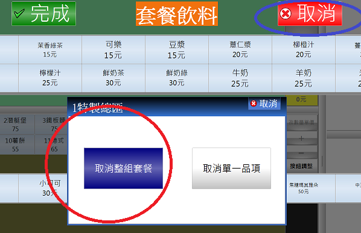

點選套餐後 在選擇口味地方按下取消 其他品項依然存在?
當點了套餐之後 (因為裡面會設定 折扣 這個項目 , 例如 折扣-15
但是當我點了套餐, 當還沒建立完成之前, 我點了取消, 畫面上卻會把 折扣-15 這個品項,
放到我的餐點列表了, 就變成我還要去移除掉這個 折扣-15 的項目,
麻煩幫我確認一下這是操作錯誤導致的問題嗎
另外有一個狀況 : 備餐畫面會出現 折扣 這個項目要按出餐,
是否備餐畫面可以不要列 折扣 這個品項 讓出餐人員去點出餐
1 個回答
您好
1.程式做了些許修正
在圈選套餐時 如在點餐過程按下取消 系統將詢問是否取消整組套餐

如果按下取消單一品項 將會保留其他品項在列表上